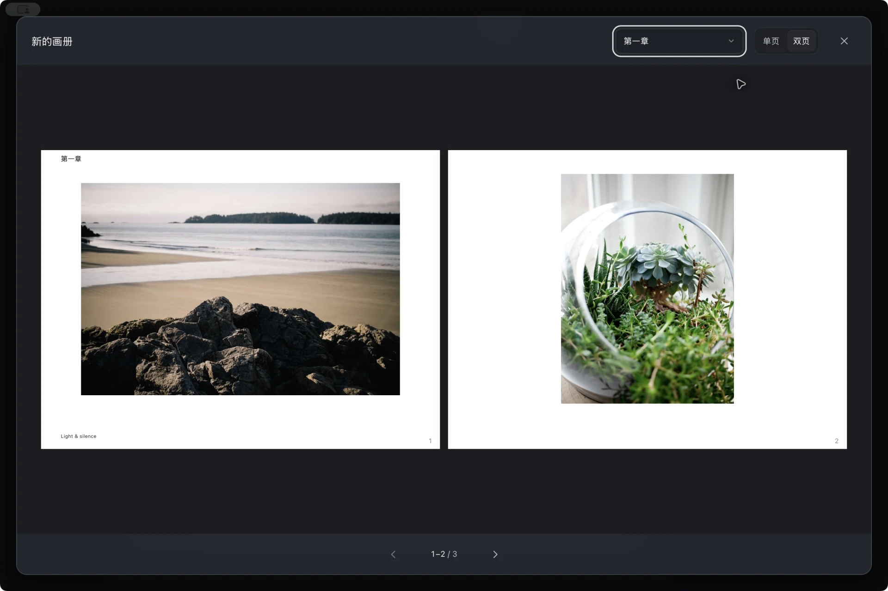
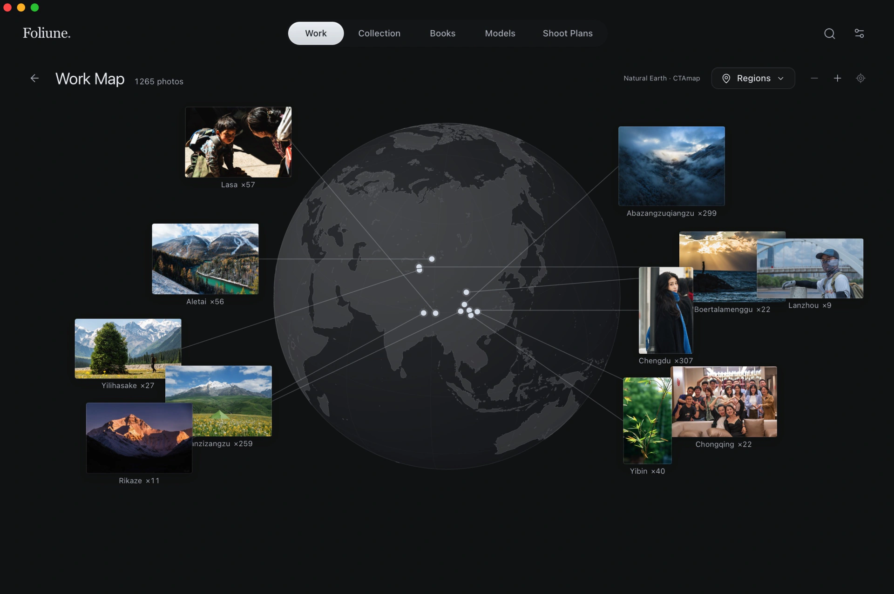
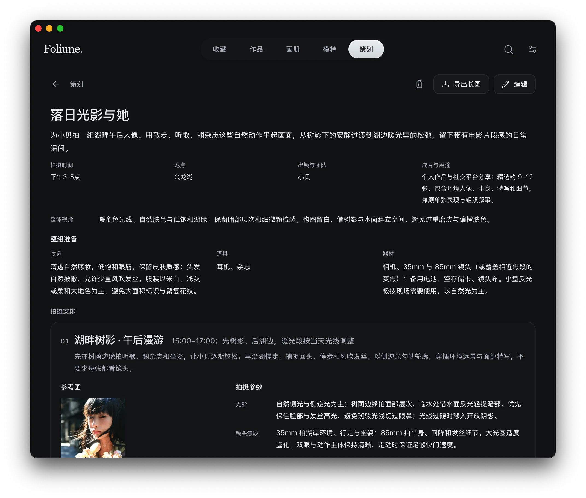

For photographs worth returning to.
Foliune is a local desktop app for photographers and enthusiasts. Keep references and your own work in separate albums, and revisit every photograph with its composition intact.
Get Foliune for macOS
Make a photobook
Choose the photographs you want to see together. Start with an automatic layout, then take your time arranging chapters and spreads. Export a standalone HTML file to share the book.

Revisit work by location
Select a representative photograph on the offline globe to see more work from that region. You can also set a shooting region for photos without GPS data.

Plan your next shoot
Bring reference images, scenes, styling, and shot lists into one plan. Export it as a single long image to keep on your phone during the shoot.

More features
-
Library organization
Import local photos or link a work folder. Add tags and notes, then find work, books, and shoot plans with library-wide search.
-
Import photos from posts
Paste a link to a single Xiaohongshu or Instagram post, preview and select photos, then confirm to add them to your library. Foliune imports only still images and needs access to the post.
-
Full-screen viewing
Play photographs in order or at random, with music from your computer.
-
Model profiles
Keep model details and sample photographs together for future shoots.
-
Collages and post previews
Export collages as PNGs or preview how photos and text will look in social posts.
-
Library backups
Back up and restore your library with ZIP archives. Save just library data and thumbnails, or add every original, including files from local imports and linked work folders.
-
Command-line tool
On macOS, install
CLI guidefoliune-cliin Foliune’s Settings → Command-Line Tool. Search and edit the same local library from your terminal or an AI assistant with terminal access. For example, find tagged photos and add them to an album.
Download Foliune
macOS
For Macs with Apple silicon
Opening Foliune for the first time
The developer hasn’t saved up for an Apple Developer membership yet.
If macOS blocks the first launch, follow this path.
System Settings → Privacy & Security → Open Anyway
To update, go to Settings → App Updates.
Windows
Planned